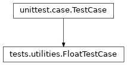

tests.utilities module
Class Inheritance Diagram

A collection of general use testing utilities.
- class tests.utilities.FloatTestCase(methodName='runTest')[source]
Bases:
TestCase
Test case involving floating point comparisons.
- assertApprox(value_1, value_2, message='')[source]
Assert that the two values are equal to wihin the current tolerance.
Notes
The exact definition is:
|value_1 - value_2| <= tolerange * |value_1 + value_2| * float_info.epsilon
- Parameters:
value_1 – The first of the two values to compare.
value_2 – The second of the two values to compare.
- Returns:
True iff the two values are within tolerance of each other.
- set_tolerance(tolerance)[source]
Set the tolerance for floating point comparisons.
- Parameters:
tolerance – The maximum fractional difference in units of floating point epsilon to allow when comparing two floating point numbers. See assertApprox for more details.
- Returns:
None
- tolerance = 10.0